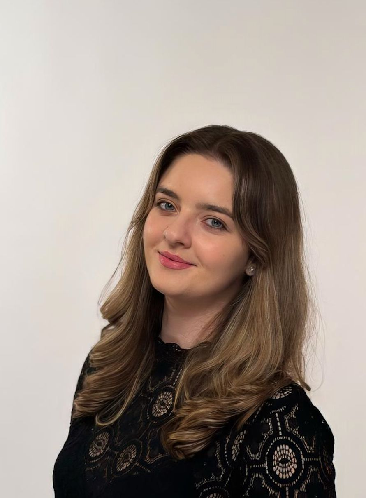

About
Hey, I'm Paula, currently living in Cluj-Napoca, Romania. I write code and care about the impact it generates in the real world. Currently at Bosch Engineering Center, working on mobility solutions, and exploring the resilience of blood supply at MedX Labs, at the intersection of tech and transfusion medicine.

Background
I studied Computer Science at Babeș-Bolyai University in Cluj-Napoca, followed by a Master's in Distributed Systems at the same university, where I focused on cloud computing, distributed algorithms, and parallel computing.
I've been building since before I graduated, with two internships during my degree, co-founding BlooDoChallenge at 18, and joining Bosch Engineering Center where I've been working on cloud-based mobility solutions since 2022.
It started with Technovation at 18, a global tech entrepreneurship competition where I built the first version of BlooDoChallenge and won the national phase. That experience is where both the product and my curiosity toward entrepreneurship began.
Why health needs innovation
People still fall through gaps that shouldn't exist. Healthcare systems are reactive and slow, and innovation is one of the few things that can meaningfully change that at scale.
Tools I work with
Java · Python · TypeScript · C# · Spring Boot · Angular · Flutter · TensorFlow · PyTorch · Hugging Face · Azure · Docker · Kubernetes · HL7/FHIR · MySQL · MongoDB
What's shifting in my thinking
I used to believe the best product wins. I'm less convinced now. Distribution, timing, and narrative matter just as much, maybe more. The "great products sell themselves" dogma doesn't survive much contact with reality.
Outside of work
I read across a lot of different subjects and enjoy conversations with people who see the world differently. Getting somewhere new is the other constant. I'm interested in how other cultures think and organize things, and being somewhere unfamiliar has a way of reshuffling your assumptions.
What I'm looking for
Looking to understand how venture works from the inside. The ideas worth backing, the companies worth building, and how the two find each other.
Get in touch
Want to talk? Reach me at paula@medx.ro